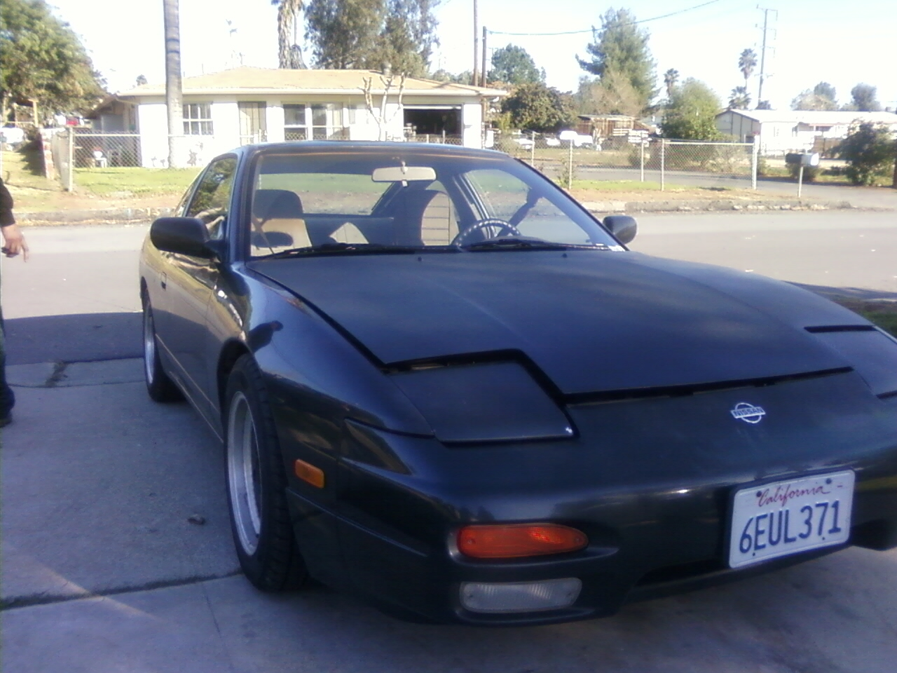
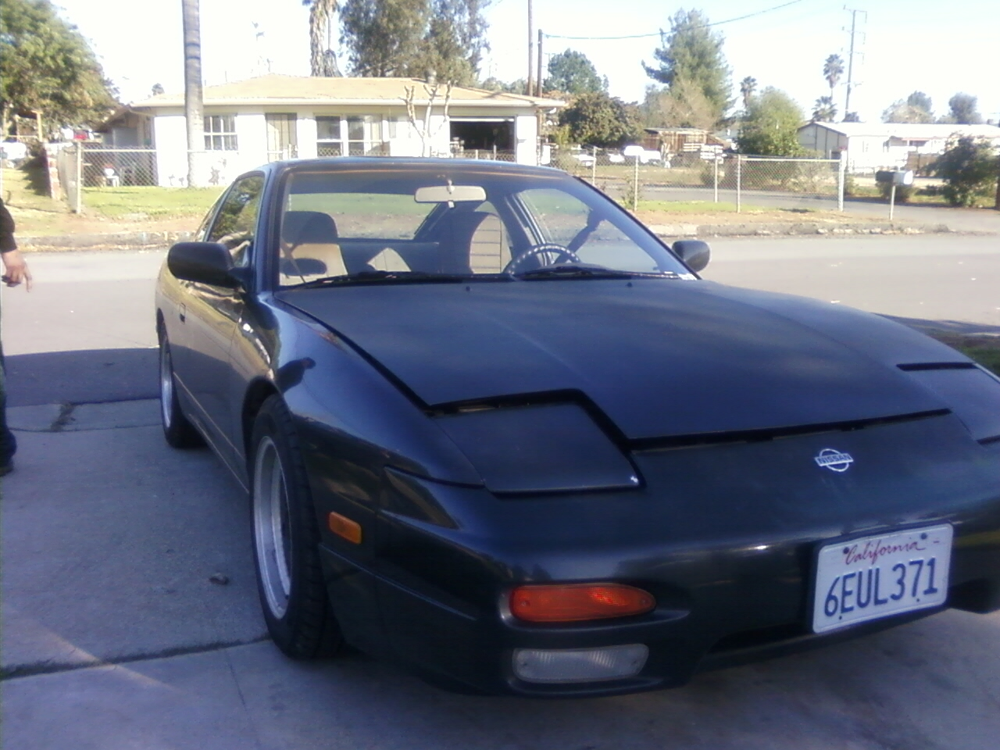

Fist Step
The 240SX was purchase stock and quickly the abition to do a convertion came up. The car was already clean in terms of the body and suspension. Just, the interior needed work. 
The 240SX was purchase stock and quickly the abition to do a convertion came up. The car was already clean in terms of the body and suspension. Just, the interior needed work. 